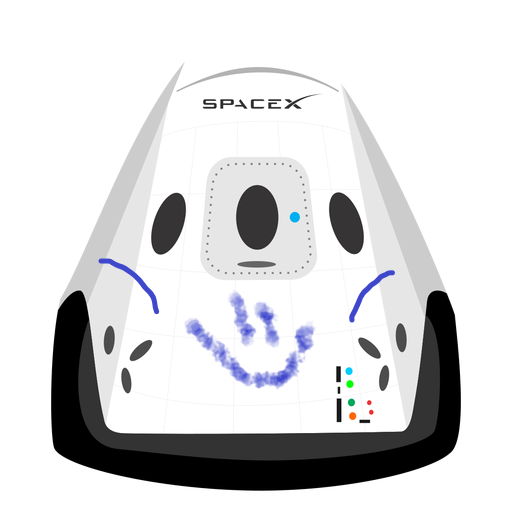

Hyperblog
Tu blog de cabecera
<<<<<<< HEAD
Este es el título atractivo e interesante del post

Aquí inicia la historia de un gran proyecto
>>>>>>> e3471207841eae809bc9e4c5fe7c76fb230f5e33Y este es el parráfo de inicio donde vamos a explicar las cosas increíbles que se pueden hacer con ramas
Los blogs son la mejor forma de compartir información y tus ideas. Mucho mas que ir a conferencias o salir en Youtube. Excepto si eres un rockstar. Pero estadísticamente no lo eres.... por ahora.
Suscribete y dale like